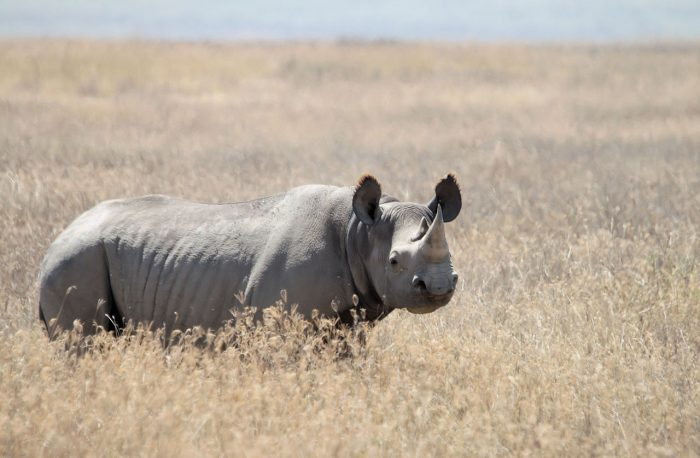
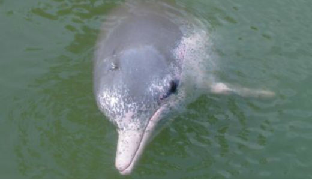
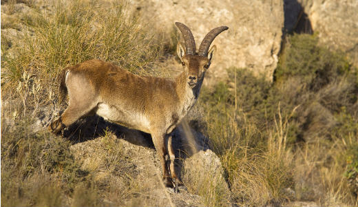

West African Black Rhinoceros
The West African Black Rhinoceros was found in several countries towards the southeast region of Africa. Measuring 3-3.8 metres long and 1.4-1.7 metres in height, this rhino would have weighed 800-1,300 kg. It had two horns, one measuring 0.5-1.3 metres and the other between 2-55cm.Hunted to extinction for their horns, these two-horned Rhinos had very poor eyesight and have been known to use birds (oxpeckers) as an early warning system of approaching threats!
Baiji White Dolphin
Baiji White Dolphin, also called the Chinese River Dolphin, can only be found in the Yangtze River in China. These mammals could grow to eight feet long and weigh up to a quarter of a ton. They relied on echolocation to navigate and hunt for pray due to their tiny eyes and very poor eyesight. Living in the Yangtze for 20 million years, their numbers declined drastically from the 1950s onwards. As China industrialised, the river was used for fishing, transportation and hydroelectricity which had a huge effect on the mammals. Although not officially recorded as extinct, no one has seen a Yangtze River Dolphin since 2002.
Pyrenean Ibex
One of four subspecies of the Spanish Ibex or Iberian Goat that was found in the Iberian Peninsula. The Ibex would grow to a height of 60-76cm at the shoulder and weigh 24-80 kg and fed mainly on grasses and herbs. They were thought to have numbered 50,000 historically, but by the early 1900s its numbers had fallen to fewer than 100. The Pyrenean Ibex is the first ever species to become extinct twice.